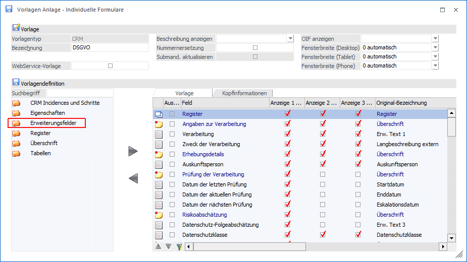

Für die Anlage von Vorlagen (CRM und Personenkonten) gibt es einen neuen Feldtyp "Erweiterungsfelder".

Mit Hilfe der Erweiterungsfelder können schnell und unkompliziert neue Eingabefelder ähnlich wie Eigenschaften und Zusatzfelder in die Vorlage integriert werden.
Es stehen folgende Typen von Erweiterungsfelder zur Verfügung:
ü Erw. Text (1-100)
ü Erw. Integer (1-10)
ü Erw. Double (1-10)
ü Erw. Großbuchstaben (1-10)
ü Erw. Datum (1-5)
ü Erw. Datum mit Uhrzeit (1-5)
ü Erw, Checkbox (1-10)
ü Erw. Mehrzeiliger Text (1-10)
Hinweis
Erweiterungsfelder sind als Informationsfelder gedacht. Es ist im Gegensatz zu Eigenschaften und Zusatzfelder derzeit noch nicht möglich nach Inhalten zu filtern oder zu sortieren.